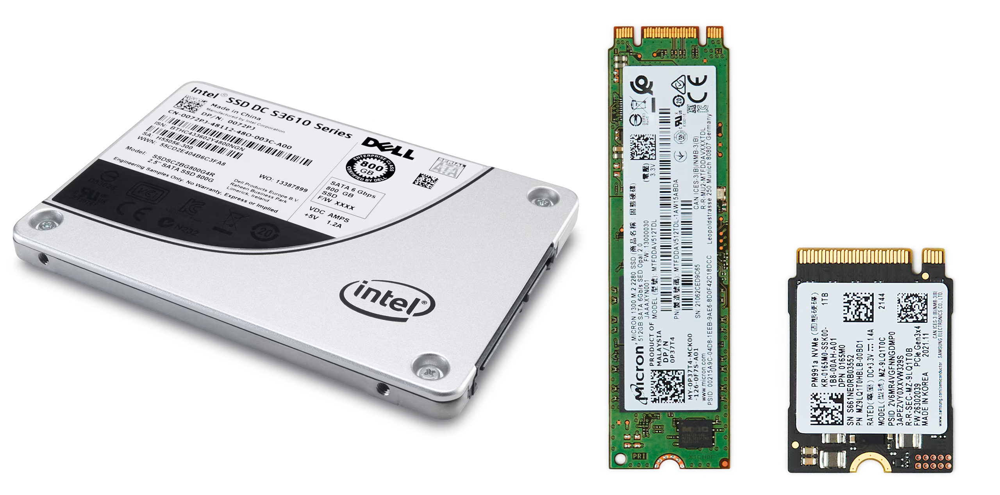

Depolama
Depolama, bilgisayarın verileri kalıcı olarak saklamasını sağlayan temel birimdir. Farklı teknolojilerle üretilen depolama aygıtları, sistem performansını ve kullanıcı deneyimini doğrudan etkiler. HDD, SSD ve NVMe gibi seçenekler, farklı ihtiyaçlara yönelik çözümler sunar.
Depolama Teknolojilerinin Temel Özellikleri
Her bir depolama teknolojisi, kapasite, hız, dayanıklılık ve maliyet gibi özelliklere göre değerlendirilir. İhtiyacınıza uygun depolama çözümünü seçmek, bilgisayarınızın genel performansını artırır.
1️⃣ HDD (Sabit Disk Sürücü)
HDD'ler manyetik diskler kullanarak verileri saklar. Yüksek kapasiteleri ve uygun maliyetleriyle öne çıkar, ancak mekanik yapıları nedeniyle SSD'lere göre daha yavaştır.
2️⃣ SSD (Katı Hal Sürücü)
SSD'ler, verileri flaş bellek üzerinde saklar ve HDD'lere kıyasla çok daha hızlı veri okuma/yazma işlemleri sunar. Dayanıklılığı, düşük enerji tüketimi ve sessiz çalışmasıyla modern bilgisayarların tercih sebebidir.
3️⃣ NVMe SSD
NVMe SSD'ler, PCIe arayüzü üzerinden doğrudan iletişim kurarak en yüksek veri aktarım hızlarını sağlar. Oyun bilgisayarları ve profesyonel uygulamalarda üstün performans sunar.
Depolama Seçerken Dikkat Edilmesi Gerekenler
Seçiminizi yaparken göz önünde bulundurmanız gerekenler:
✔ Kapasite: İhtiyacınız olan veri miktarını karşılayacak kapasiteye sahip mi?✔ Hız: Okuma ve yazma hızları, kullanım senaryonuza uygun mu?
✔ Dayanıklılık: Sürekli kullanımda ömrü ve güvenilirliği yeterli mi?
✔ Bağlantı Türü: SATA, NVMe gibi bağlantı standartları sisteminizle uyumlu mu?
✔ Fiyat/Performans Oranı: Bütçenize uygun performansı sunuyor mu?
Depolama Çeşitleri
💻 1. Masaüstü Depolama Çözümleri
Genellikle HDD veya SSD olarak tercih edilen bu çözümler, yüksek kapasiteleri ve uygun maliyetleri ile öne çıkar.
🖥 2. Dizüstü Depolama Çözümleri
Taşınabilir bilgisayarlar için optimize edilen depolama çözümleri, kompakt yapıları ve düşük enerji tüketimleri ile dikkat çeker.
🎮 3. Yüksek Performans Depolama Birimleri
NVMe SSD'ler gibi yüksek hızlı çözümler, özellikle oyun bilgisayarları ve profesyonel uygulamalarda üstün performans sağlar.